Les widgets en images
Chaque widget du cours avec son code et une vraie capture d'écran : l'image est produite par Flutter à partir du code affiché juste à côté. Les images comparent les cas qu'on confond : margin et padding, Row et Column, les six alignements, les cinq boutons.
Comment ces images ont été faites
Le code de chaque exemple est dans le projet exemples_flutter (dossier mobile). Un test Flutter construit le widget, le dessine avec la police Roboto et les icônes Material, et enregistre l'image. Le code affiché ici est extrait du même fichier : ce que vous lisez est exactement ce qui a été dessiné.
Sommaire
- A. La structure d'une application : Text, Center, AppBar, Scaffold, SafeArea
- B. La mise en page : Container, margin et padding, Padding, SizedBox, Row, Column, alignements
- C. Le contenu : Icon, Card, Image, ClipOval, ListTile
- D. Les boutons
- E. Les champs de texte
- F. L'état : Stateless, Stateful, setState, formulaire
- G. Hot reload, hot restart, run
A. La structure d'une application
Text et TextStyle Priorité 1
Text affiche du texte. Le paramètre style reçoit un TextStyle : couleur, taille, graisse.
return const Text(
'hello flutter widgets',
style: TextStyle(color: Colors.red, fontSize: 28, fontWeight: FontWeight.bold),
);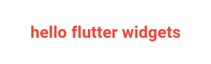
À retenir
SansMaterialApp, runApp(Text(...)) demande textDirection: TextDirection.ltr (de gauche à droite). Avec MaterialApp et Scaffold, ce paramètre n'est plus nécessaire.Center : où se place le contenu ? Priorité 1
Dans un Scaffold, le body s'affiche en haut à gauche par défaut. Center place son enfant au milieu de l'espace disponible.
Sans Center
return const Scaffold(
body: Text('Bonjour Flutter !'),
);Avec Center
return const Scaffold(
body: Center(
child: Text('Bonjour Flutter !'),
),
);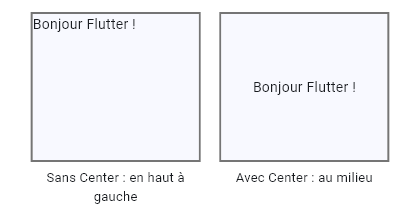
AppBar : leading, title, actions Priorité 1
La barre du haut. leading à gauche (menu, retour), title au centre-gauche, actions : une liste de widgets à droite. bottom ajoute une barre en dessous (onglets).
return Scaffold(
appBar: AppBar(
backgroundColor: Colors.blue,
foregroundColor: Colors.white,
leading: const Icon(Icons.menu), // à gauche
title: const Text('Ma Bibliothèque'), // le titre
actions: const [ // à droite
Icon(Icons.search),
SizedBox(width: 12),
Icon(Icons.more_vert),
SizedBox(width: 8),
],
),
body: const Center(child: Text('body')),
);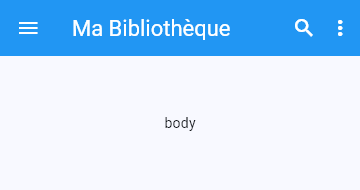
À retenir
backgroundColor change le fond, foregroundColor change la couleur du texte et des icônes. title attend un widget (donc Text(...)), pas une chaîne.Scaffold : les zones d'une page Priorité 1
Scaffold donne la structure d'une page : appBar (haut), body (contenu), floatingActionButton (bouton rond flottant, en bas à droite), bottomNavigationBar (navigation en bas), drawer (panneau latéral). L'image de droite montre le drawer ouvert.
return Scaffold(
key: cle,
appBar: AppBar(title: const Text('appBar')),
body: const Center(child: Text('body')),
floatingActionButton: FloatingActionButton(
onPressed: () {},
child: const Icon(Icons.add),
),
bottomNavigationBar: BottomNavigationBar(
items: const [
BottomNavigationBarItem(icon: Icon(Icons.home), label: 'Accueil'),
BottomNavigationBarItem(icon: Icon(Icons.person), label: 'Profil'),
],
),
drawer: const Drawer(
child: Center(child: Text('drawer')),
),
);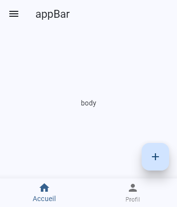
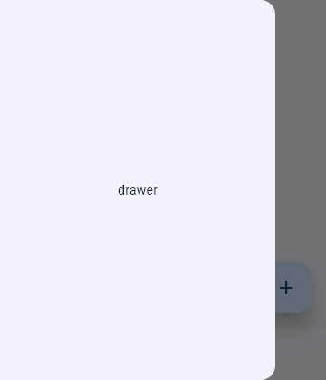
À retenir
backgroundColor colore la page entière. resizeToAvoidBottomInset redimensionne le body quand le clavier apparaît, pour ne pas cacher les champs de saisie.SafeArea : éviter l'encoche Priorité 2
Sur certains téléphones, une encoche ou une barre système cache le haut de l'écran. SafeArea décale son enfant pour qu'il reste visible. L'image simule une barre d'état de 44 pixels.
Sans SafeArea
return Scaffold(
body: Container(
color: Colors.grey,
child: const Text('Safe area'),
),
);Avec SafeArea
return Scaffold(
body: SafeArea(
child: Container(
color: Colors.grey,
child: const Text('Safe area'),
),
),
);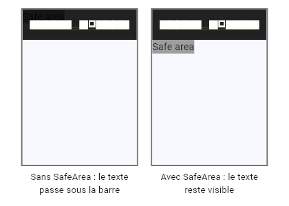
B. La mise en page
Container : avec ou sans enfant Priorité 1
Container est une boîte qui contient un seul widget enfant et qu'on peut styler (taille, couleur, marges).
Sans enfant
return Scaffold(
appBar: AppBar(title: const Text('Image app')),
body: Container(color: Colors.grey),
);Avec enfant
return Scaffold(
appBar: AppBar(title: const Text('Image app')),
body: Container(
color: Colors.grey,
child: const Text('Welcome to Android ATC'),
),
);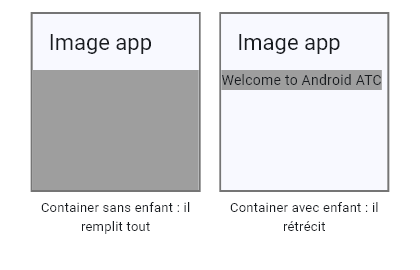
À retenir
Pour qu'unContainer avec enfant remplisse l'écran, donnez width: double.infinity et height: double.infinity.margin et padding : dehors ou dedans ? Priorité 1
C'est la confusion la plus fréquente. margin est l'espace autour du conteneur (à l'extérieur). padding est l'espace entre le bord du conteneur et son enfant (à l'intérieur).
margin
return Container(
color: Colors.grey,
height: 70,
width: 200,
margin: const EdgeInsets.all(20), // espace À L'EXTÉRIEUR du conteneur
child: const Text('Welcome'),
);padding
return Container(
color: Colors.grey,
height: 70,
width: 200,
padding: const EdgeInsets.only(left: 50), // espace À L'INTÉRIEUR, avant l'enfant
child: const Text('Welcome'),
);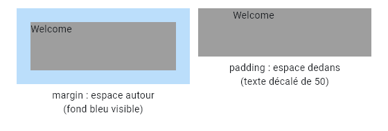
À retenir
EdgeInsets.all(20) : tous les côtés. EdgeInsets.only(left: 50) : certains côtés. EdgeInsets.symmetric(vertical: 8, horizontal: 16) : haut et bas, gauche et droite. EdgeInsets.fromLTRB(gauche, haut, droite, bas) : les quatre dans cet ordre.decoration, borderRadius, transform Priorité 2
decoration avec BoxDecoration permet un cercle, une bordure, des coins arrondis ou une image de fond. transform applique une rotation (en radians).
shape circle
return Container(
height: 120,
width: 120,
decoration: const BoxDecoration(
color: Color(0xff7c94b6),
shape: BoxShape.circle,
),
child: const Center(child: Text('Welcome')),
);border et borderRadius
return Container(
height: 120,
width: 160,
decoration: BoxDecoration(
color: const Color(0xff7c94b6),
border: Border.all(width: 8),
borderRadius: BorderRadius.circular(12),
),
);transform
return Container(
height: 100,
width: 160,
color: Colors.amber,
transform: Matrix4.rotationZ(0.1), // angle en radians
child: const Center(child: Text('rotationZ(0.1)')),
);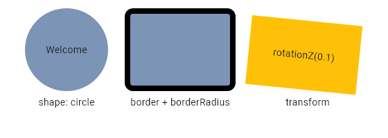
Piège
Quand on utilisedecoration, la couleur va dans BoxDecoration(color: ...). Écrire color: sur le Container et decoration: provoque une erreur (vérifié par un test).Padding et SizedBox Priorité 1
Padding entoure un widget d'espace. SizedBox crée un espace vide de taille fixe (souvent entre deux widgets d'une Column ou d'une Row), ou impose une taille à son enfant.
Padding
return const Padding(
padding: EdgeInsets.all(20),
child: Text('hello padding'),
);SizedBox
return Column(
children: const [
Text('Premier élément'),
SizedBox(height: 30), // espace vide de 30 pixels
Text('Deuxième élément'),
],
);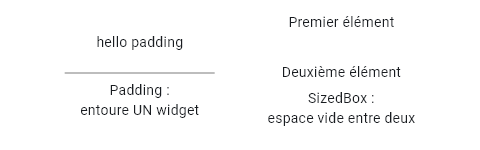
Column et Row Priorité 1
Un Container n'a qu'un enfant. Pour plusieurs enfants, on utilise children: [...] dans Column (de haut en bas) ou Row (de gauche à droite).
Column
return Column(
children: [
boite(Colors.red, '1'),
boite(Colors.green, '2'),
boite(Colors.blue, '3'),
],
);Row
return Row(
children: [
boite(Colors.red, '1'),
boite(Colors.green, '2'),
boite(Colors.blue, '3'),
],
);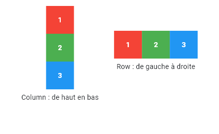
mainAxisAlignment : l'axe principal Priorité 1
L'axe principal est horizontal pour une Row, vertical pour une Column. mainAxisAlignment répartit les enfants le long de cet axe.
return Row(
mainAxisAlignment: alignement, // start, end, center, spaceBetween, spaceAround, spaceEvenly
children: [
boite(Colors.red, '1', taille: 40),
boite(Colors.green, '2', taille: 40),
boite(Colors.blue, '3', taille: 40),
],
);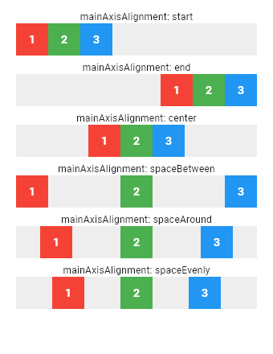
À retenir
start : au début. end : à la fin. center : au milieu. spaceBetween : espace entre les enfants, les extrémités collées aux bords. spaceAround : espace autour de chaque enfant (la moitié aux bords). spaceEvenly : espaces identiques partout, bords compris.crossAxisAlignment : l'axe transversal Priorité 1
L'axe transversal est perpendiculaire : vertical pour une Row, horizontal pour une Column. crossAxisAlignment aligne les enfants sur cet axe.
return Row(
crossAxisAlignment: alignement, // start, center, end, stretch
children: [
Container(width: 40, height: 30, color: Colors.red),
Container(width: 40, height: 60, color: Colors.green),
Container(width: 40, height: 90, color: Colors.blue),
],
);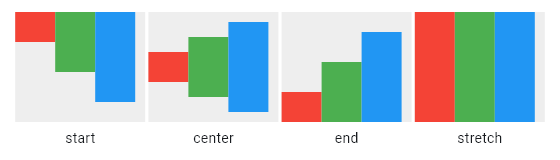
Piège
stretch étire les enfants sur tout l'axe transversal. Ne confondez pas mainAxisAlignment (le long de la direction) et crossAxisAlignment (en travers).C. Le contenu
Icon Priorité 2
Icon(Icons.nom) affiche une icône du jeu Material. size et color règlent la taille et la couleur.
return const Row(
mainAxisAlignment: MainAxisAlignment.spaceEvenly,
children: [
Icon(Icons.shopping_cart, size: 50, color: Colors.green),
Icon(Icons.favorite, size: 30, color: Colors.red),
Icon(Icons.settings),
],
);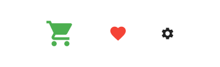
Card Priorité 1
Card est une carte Material : coins légèrement arrondis et ombre. Elle accepte color, elevation, shape, shadowColor, margin.
Card avec une image et du texte
return Card(
color: Colors.blue[100],
margin: const EdgeInsets.all(20),
child: Row(
children: [
Container(
padding: const EdgeInsets.all(8),
height: 100,
width: 100,
child: Image.asset('images/pizza.png'),
),
const SizedBox(width: 20),
const Text('Vegetable Pizza', style: TextStyle(fontSize: 22)),
],
),
);Card personnalisée
return Card(
shape: RoundedRectangleBorder(borderRadius: BorderRadius.circular(20)),
shadowColor: Colors.deepOrange,
elevation: 20,
color: Colors.blue[100],
margin: const EdgeInsets.all(20),
child: const Padding( // Card n'a pas de padding : on utilise Padding
padding: EdgeInsets.all(20),
child: Text('Bonjour Flutter'),
),
);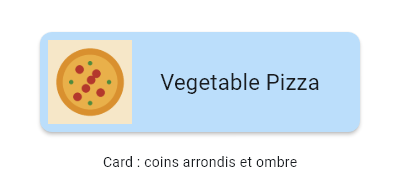
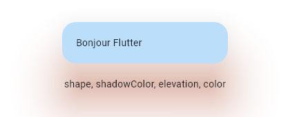
Piège
Card n'a pas de padding. Pour espacer le contenu du bord de la carte, mettez un widget Padding comme enfant (dernier exemple).Image et ClipOval Priorité 1
Image.asset affiche une image du projet (déclarée dans pubspec.yaml), Image.network une image d'Internet. ClipOval découpe son enfant en ovale : avec width égal à height on obtient un cercle.
Image normale
return Image.asset('images/livre2.png', width: 200, height: 150);Cercle
return ClipOval(
child: Image.asset('images/livre2.png', width: 150, height: 150, fit: BoxFit.cover),
);Ellipse
return ClipOval(
child: Image.asset('images/livre2.png', width: 220, height: 80, fit: BoxFit.cover),
);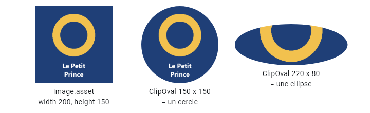
À retenir
fit: BoxFit.cover remplit la zone sans déformer l'image, quitte à en couper une partie. Pour Image.asset, ajoutez dans pubspec.yaml : flutter: puis assets: puis - images/, avec les bonnes indentations, puis relancez l'application.ListTile : leading, title, subtitle, trailing Priorité 1
ListTile est une ligne de liste toute prête. leading : widget à gauche. title : titre. subtitle : texte sous le titre. trailing : widget à droite.
return Container(
color: Colors.lightBlue[100],
child: const ListTile(
leading: Icon(Icons.account_circle, size: 40), // leading : à gauche
title: Text('Widget of the week'), // title
subtitle: Text('#54'), // subtitle : sous le titre
trailing: Icon(Icons.menu), // trailing : à droite
),
);
D. Les boutons
Quel bouton choisir ? Priorité 1
Chaque bouton a un niveau d'importance. ElevatedButton : l'action la plus importante. OutlinedButton : action importante mais secondaire. TextButton : action peu importante. IconButton : une icône seule. FloatingActionButton : l'action principale de l'écran, un seul par écran.
return Wrap(
spacing: 12,
runSpacing: 12,
crossAxisAlignment: WrapCrossAlignment.center,
children: [
ElevatedButton(onPressed: () {}, child: const Text('Elevated')),
OutlinedButton(onPressed: () {}, child: const Text('Outlined')),
TextButton(onPressed: () {}, child: const Text('Text')),
IconButton(onPressed: () {}, icon: const Icon(Icons.favorite), tooltip: 'Favori'),
FloatingActionButton(onPressed: () {}, mini: true, child: const Icon(Icons.add)),
],
);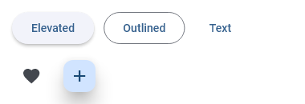
À retenir
onPressed attend une fonction : () {} est une fonction vide. Un bouton avec onPressed: null est désactivé (grisé).Boutons avec icône Priorité 2
Les constructeurs .icon ajoutent une icône à gauche du texte : ElevatedButton.icon, OutlinedButton.icon. FloatingActionButton.extended affiche une icône et un libellé.
return Wrap(
spacing: 12,
runSpacing: 12,
children: [
ElevatedButton.icon(
onPressed: () {},
icon: const Icon(Icons.shopping_cart),
label: const Text('Acheter'),
),
OutlinedButton.icon(
onPressed: () {},
icon: const Icon(Icons.settings),
label: const Text('Réglages'),
),
FloatingActionButton.extended(
onPressed: () {},
icon: const Icon(Icons.add),
label: const Text('Ajouter'),
),
],
);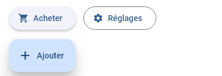
Personnaliser un bouton avec styleFrom Priorité 2
styleFrom règle le style : backgroundColor, foregroundColor, elevation, shadowColor, shape, side, padding.
return SizedBox(
width: 300,
height: 80,
child: ElevatedButton(
onPressed: () {},
style: ElevatedButton.styleFrom(
backgroundColor: Colors.yellow,
foregroundColor: Colors.black,
elevation: 15,
shadowColor: Colors.yellow,
shape: const StadiumBorder(),
side: const BorderSide(color: Colors.black, width: 2),
),
child: const Row(
mainAxisAlignment: MainAxisAlignment.spaceEvenly,
children: [
Text('Click to begin', style: TextStyle(fontSize: 22)),
Icon(Icons.add_shopping_cart, size: 30),
],
),
),
);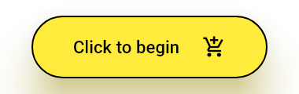
Piège : slides obsolètes
Les slides utilisentprimary: et onPrimary:. Ces paramètres n'existent plus dans Flutter 3.41 : l'analyse donne « The named parameter 'primary' isn't defined ». Il faut écrire backgroundColor: et foregroundColor:.FloatingActionButton : l'emplacement Priorité 2
Par défaut le bouton est en bas à droite (endFloat). floatingActionButtonLocation du Scaffold le déplace. mini: true le réduit.
return Scaffold(
appBar: AppBar(title: Text(titre)),
floatingActionButtonLocation: emplacement,
floatingActionButton: FloatingActionButton(
onPressed: () {},
child: const Icon(Icons.add),
),
);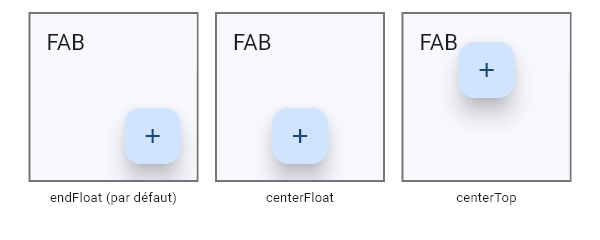
E. Les champs de texte
TextField et TextFormField Priorité 1
TextField est le champ de saisie de base. TextFormField fait la même chose mais s'utilise dans un Form et possède un validator. InputDecoration règle l'apparence : hintText (texte grisé), labelText (étiquette qui flotte), icon ou prefixIcon, border.
return Column(
children: [
const TextField(), // 1. le plus simple
const SizedBox(height: 14),
const TextField( // 2. hintText et icon
decoration: InputDecoration(hintText: 'User Name', icon: Icon(Icons.person)),
),
const SizedBox(height: 14),
TextFormField( // 3. labelText, prefixIcon, bordure
decoration: const InputDecoration(
labelText: 'User Name',
prefixIcon: Icon(Icons.person),
border: OutlineInputBorder(),
),
),
],
);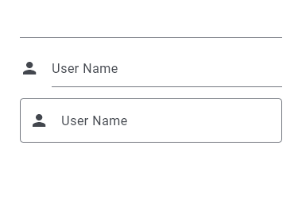
obscureText, maxLength, maxLines Priorité 1
obscureText: true masque la saisie (mot de passe). maxLength limite la longueur (un compteur apparaît). maxLines permet plusieurs lignes. keyboardType choisit le clavier (nombre, e-mail, téléphone).
return const Column(
children: [
TextField( // mot de passe
obscureText: true,
obscuringCharacter: '*',
decoration: InputDecoration(labelText: 'Mot de passe', border: OutlineInputBorder()),
),
SizedBox(height: 14),
TextField( // longueur maximale
maxLength: 10,
decoration: InputDecoration(labelText: 'Pseudo (10 max)', border: OutlineInputBorder()),
),
SizedBox(height: 14),
TextField( // plusieurs lignes
maxLines: 3,
decoration: InputDecoration(labelText: 'Message', border: OutlineInputBorder()),
),
],
);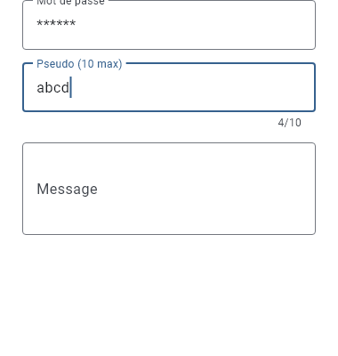
Lire la saisie : onChanged et controller Priorité 1
Deux façons de lire ce que tape l'utilisateur. onChanged reçoit la nouvelle valeur à chaque modification. Un TextEditingController relié au champ permet de lire controller.text quand on veut (par exemple au clic sur un bouton).
// TextField : lire la saisie avec onChanged et setState
class SaisieApp extends StatefulWidget {
const SaisieApp({super.key});
@override
State<SaisieApp> createState() => _SaisieAppState();
}
class _SaisieAppState extends State<SaisieApp> {
String _message = '';
@override
Widget build(BuildContext context) {
return MaterialApp(
debugShowCheckedModeBanner: false,
home: Scaffold(
appBar: AppBar(title: const Text('TextField')),
body: Padding(
padding: const EdgeInsets.all(20),
child: Column(
children: [
TextField(
onChanged: (val) {
setState(() {
_message = val;
});
},
decoration: const InputDecoration(
labelText: 'Votre nom',
border: OutlineInputBorder(),
),
),
const SizedBox(height: 20),
Text('Bonjour $_message', style: const TextStyle(fontSize: 22)),
],
),
),
),
);
}
}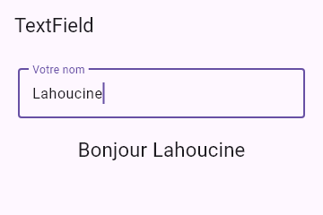
F. L'état : StatelessWidget et StatefulWidget
| StatelessWidget | StatefulWidget | |
|---|---|---|
| Peut changer ? | Non, identique après création | Oui, via setState |
| Classes | Une : le widget avec build() | Deux : le widget (avec createState()) et l'état State (avec build()) |
| Exemples | Text, Icon, IconButton, un titre fixe | Compteur, Checkbox, Radio, Slider, Form, TextField |
Un compteur avec setState Priorité 1
Le bouton + augmente la variable, mais seul setState prévient Flutter de reconstruire l'écran. Les deux images montrent l'écran au départ, puis après trois clics sur +.
// Compteur : StatefulWidget, setState, deux boutons flottants (+ et -)
class CompteurApp extends StatefulWidget {
const CompteurApp({super.key});
@override
State<CompteurApp> createState() => _CompteurAppState();
}
class _CompteurAppState extends State<CompteurApp> {
int _compteur = 0;
void _incrementer() {
setState(() {
_compteur++;
});
}
void _decrementer() {
setState(() {
_compteur--;
});
}
@override
Widget build(BuildContext context) {
return MaterialApp(
debugShowCheckedModeBanner: false,
home: Scaffold(
appBar: AppBar(title: const Text('Compteur')),
body: Center(
child: Column(
mainAxisAlignment: MainAxisAlignment.center,
children: [
const Text('Nombre de clics :'),
Text('$_compteur', style: const TextStyle(fontSize: 48)),
],
),
),
floatingActionButton: Row(
mainAxisSize: MainAxisSize.min,
children: [
FloatingActionButton(
heroTag: 'moins',
onPressed: _decrementer,
child: const Icon(Icons.remove),
),
const SizedBox(width: 12),
FloatingActionButton(
heroTag: 'plus',
onPressed: _incrementer,
child: const Icon(Icons.add),
),
],
),
),
);
}
}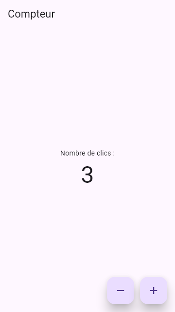
Piège
Modifier _compteur++ sans setState change la variable mais pas l'écran. Et setState ne s'appelle que dans une classe State, donc dans un StatefulWidget.
Le compteur de votre cours (statefulwidget.txt) Priorité 2
Le fichier du professeur est le compteur par défaut de Flutter. Il fonctionne tel quel, mais utilise la syntaxe courte .fromSeed(...) et .center (sans le nom de la classe).
import 'package:flutter/material.dart';
void main() {
runApp(const MyHomePage(title:"test"));
}
class MyHomePage extends StatefulWidget {
const MyHomePage({super.key, required this.title});
final String title;
@override
State<MyHomePage> createState() => _MyHomePageState();
}
class _MyHomePageState extends State<MyHomePage> {
int _counter = 0;
void _incrementCounter() {
setState(() {
_counter++;
});
}
@override
Widget build(BuildContext context) {
return MaterialApp(
title: 'Flutter Demo',
theme: ThemeData(
colorScheme: .fromSeed(seedColor: Colors.deepPurple),
),
home: Scaffold(
appBar: AppBar(
backgroundColor: Theme.of(context).colorScheme.inversePrimary,
title: Text(widget.title),
),
body: Center(
child: Column(
mainAxisAlignment: .center,
children: [
const Text('You have pushed the button this many times:'),
Text(
'$_counter',
style: Theme.of(context).textTheme.headlineMedium,
),
],
),
),
floatingActionButton: FloatingActionButton(
onPressed: _incrementCounter,
tooltip: 'Increment',
child: const Icon(Icons.add),
),
),
);
}
}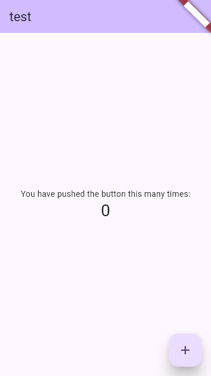
Version de Dart
Les raccourcis .fromSeed(...) et .center demandent Dart 3.10 ou plus récent. Avec un vieux projet (sdk: ^3.5.0 dans pubspec.yaml) la compilation échoue avec « This requires the experimental 'dot-shorthands' language feature ». Vérifié : ce fichier compile avec sdk: ^3.10.0. En cas d'erreur, écrivez ColorScheme.fromSeed et MainAxisAlignment.center.
Le texte du bouton change au clic Priorité 1
// Exercice du cours : le texte du bouton change au clic
class BoutonClicApp extends StatefulWidget {
const BoutonClicApp({super.key});
@override
State<BoutonClicApp> createState() => _BoutonClicAppState();
}
class _BoutonClicAppState extends State<BoutonClicApp> {
String _texte = 'Cliquer ici';
@override
Widget build(BuildContext context) {
return MaterialApp(
debugShowCheckedModeBanner: false,
home: Scaffold(
appBar: AppBar(title: const Text('Bouton')),
body: Center(
child: ElevatedButton(
onPressed: () {
setState(() {
_texte = 'Bouton cliqué !';
});
},
child: Text(_texte),
),
),
),
);
}
}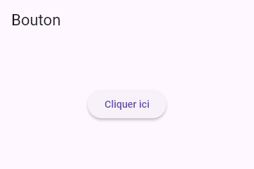
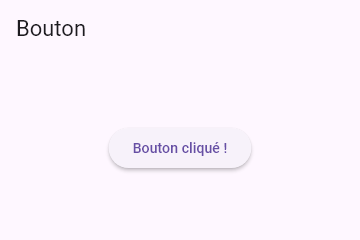
Form, validator et validate() Priorité 1
La GlobalKey<FormState> donne accès au formulaire. validator renvoie un message d'erreur (une chaîne) ou null si la valeur est correcte. validate() exécute tous les validateurs et renvoie true si tout est bon.
// TextFormField + Form + GlobalKey + validator
class FormulaireApp extends StatefulWidget {
const FormulaireApp({super.key});
@override
State<FormulaireApp> createState() => _FormulaireAppState();
}
class _FormulaireAppState extends State<FormulaireApp> {
final _numberForm = GlobalKey<FormState>();
String _message = '';
@override
Widget build(BuildContext context) {
return MaterialApp(
debugShowCheckedModeBanner: false,
home: Scaffold(
appBar: AppBar(title: const Text('Formulaire')),
body: Padding(
padding: const EdgeInsets.all(20),
child: Form(
key: _numberForm,
child: Column(
children: [
TextFormField(
decoration: const InputDecoration(
labelText: 'Premier nombre',
border: OutlineInputBorder(),
),
validator: (val) {
if (val!.isEmpty) return 'Prière de saisir une valeur';
return null;
},
),
const SizedBox(height: 16),
TextFormField(
decoration: const InputDecoration(
labelText: 'Deuxième nombre',
border: OutlineInputBorder(),
),
validator: (val) {
if (val!.isEmpty) return 'Prière de saisir une valeur';
return null;
},
),
const SizedBox(height: 16),
ElevatedButton(
onPressed: () {
if (_numberForm.currentState!.validate()) {
setState(() {
_message = 'Formulaire validé';
});
} else {
setState(() {
_message = 'Prière de fixer les erreurs';
});
}
},
child: const Text('Valider'),
),
const SizedBox(height: 16),
Text(_message, style: const TextStyle(fontSize: 18)),
],
),
),
),
),
);
}
}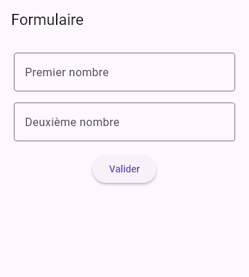
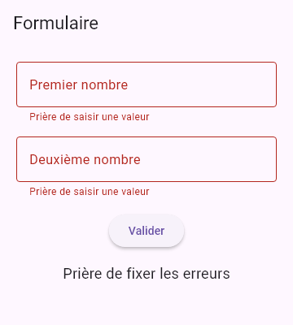
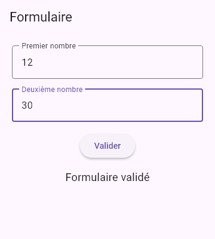
G. Hot reload, hot restart, run
| Critère | Run | Hot Reload | Hot Restart |
|---|---|---|---|
| Lance l'application | Oui | Non, la met à jour | La redémarre |
| Conserve l'état (compteur, saisie) | Non | Oui, généralement | Non |
| Réexécute main() | Oui | Non | Oui |
| Vitesse | Plus lent | Très rapide | Rapide |
À retenir
Hot reload pour tester un changement d'interface sans perdre ce que vous avez saisi. Hot restart quand l'état doit repartir de zéro (par exemple après avoir changé la valeur initiale d'une variable d'état).
Ensuite
Passez aux TP et exercices corrigés, qui assemblent ces widgets en vraies applications (IMC, Ma Bibliothèque).